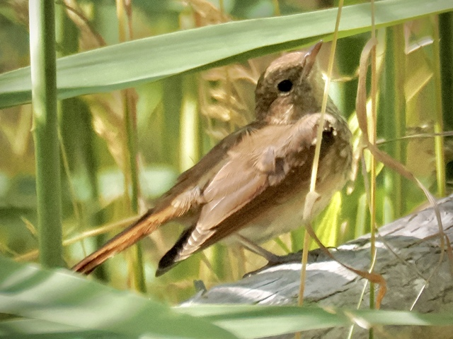

Common Nightingale
Luscinia megarhynchos
Order: Passeriformes
Family: Muscicapidae

A robin-like brown bird with a rufous tail. This one is a juvenile, sporting spotted feathers on the head and breast. Nightingales are named as such because males, arriving in spring, sing day and night. Their song is loud, piercing, and varied. Accordingly, the singing bird is extremely difficult to see well, hiding from within dense bushes. I've had many thankless trips trying to find a singing nightingale, only for this one to pop up in front of me...